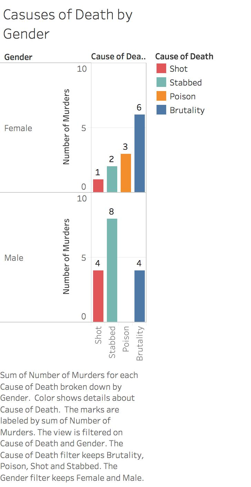
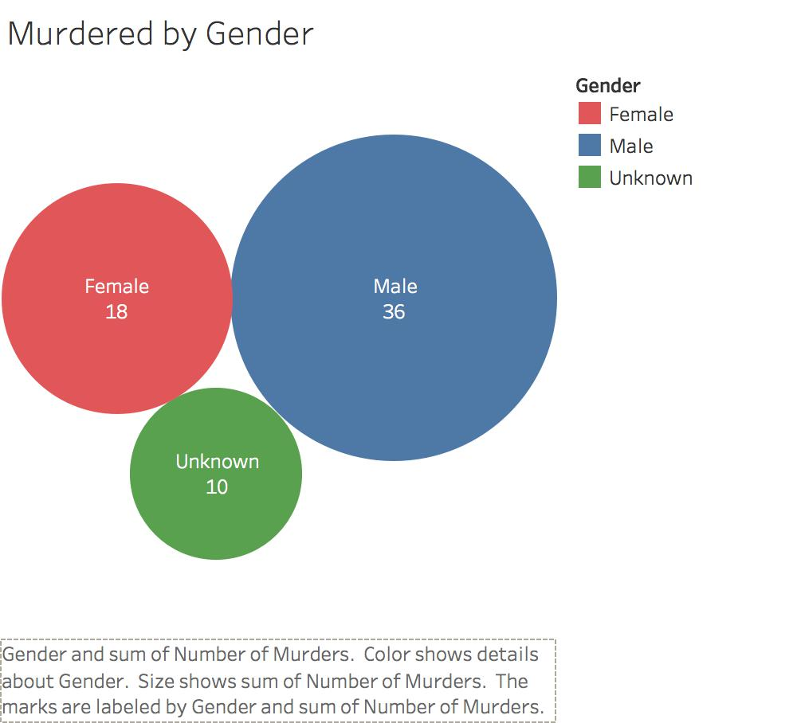
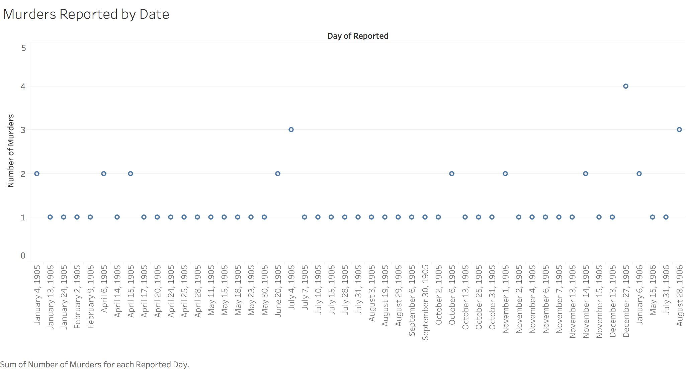
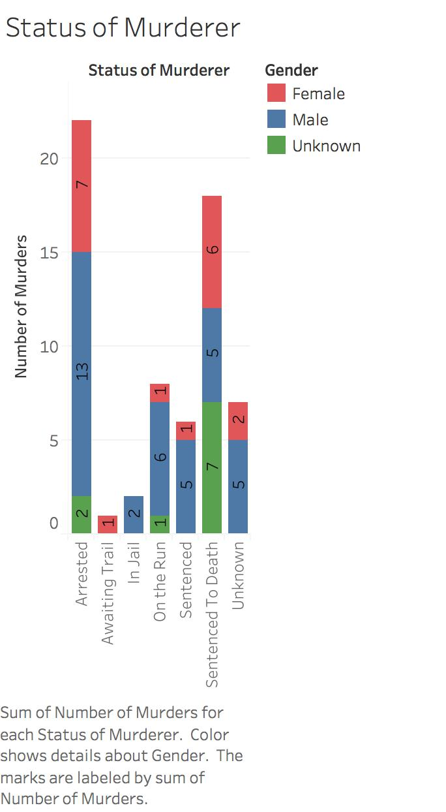

Murder is one of the worlds tragedies that sadly is unavoidable. Even though it is not as common as one might think it takes a bigger emotional toll on the friends and family of the deceased then the common sickness. Murder has also been the defining point for many countries and societies. In this paper, I will look at how the Egyptian Gazette reports murder. Moreover, I will analyze how each murder is reported in terms of the gender of the deceased, how they were killed, and the status of the murderer himself. Given the time in history I believe most murders were committed by using some type of weapon that is easily accessible like a knife, furthermore these murders were committed by men who which were ultimately arrested.
In doing my research I took a very direct approach. Given that murder isn’t such a common occurrence I concluded that there couldn’t be to many murders in Alexandria. After coming to that conclusion, I thought it was best to use a query that searched for the words “murder”, and “kill” throughout every single issue. After accomplishing this I found that there were about a total of 64 murders that happened between January 4, 1905 and May 5, 1906. After going through all 64 articles that contained the words “murder” and “kill” I found that the best way to pull the most information out of each article was to categorize the evidence by the gender of the deceased, how they were killed, and the status of the murderer. After organizing all this data I plugged into tableau into charts and graphs that you will see later in this paper to support my argument. To be frank there were a lot of other murders that were reported but all these were high numbers that mostly had something to do with military forces, I choose to exclude this data because I wanted to focus on the less common everyday murders between neighbors, husbands and wife’s, and even brothers and sisters. I also choose to exclude the location where each murder had taken place simply because there was not enough viable data to make comparisons. It is also important to know that every murder case that was reported the murder was of male gender except one.


After analyzing the data, it was easy to see that the bulk of people who were killed are men, with a total of 36 of them murdered throughout Alexandria. As far as for women there were only a total of 18, and then the ten unknown. These “unknowns” is because the data is faulty since in some articles the gender of the deceased is not clearly stated. This is not all in all surprising because there is substantial evidence over the course of history that points that men are 77% more likely to be murdered then women. This because men are more prone to aggression then women. Much of the articles dealing with murdered males had to do with either two or more men who had a dispute over something to do with money, women, or reputation. One can see an example of this on page 3 of the October 8, 1905 issue in which two men had a brawl simply because they were shooting insults at each other, the conversation escalated until one of the men drew a knife out and stabbed his enemy twice in the chest. It is said that the victim tried to reach the local pharmacy but collapsed after just a few steps. Throughout the issues there are many more examples of petty murders just like the one above.

In evaluating the murder by gender, I found a correlation between the way the victim was killed and their sex. Eight of the men who were killed were stabbed, while only two females were stabbed. Additionally, six of the females were brutality killed while only four males. I define brutality as causes that are not common such as strangulation or thrown in a pit. The data is clear that the majority of women are usually killed in some strange way, now as to why this happens is not clear. These strange deaths again must be the result of aggression in men. Murders between a husband and his wife often happened because of some sort of jealousy. In the September 9, 1906 issue, there was a case about a man who murdered his wife because he was jealous about the man his wife would marry after his death. In recognize of his own jealousy he thought his only means to free himself from it was to murder his beloved wife. As far as for the men side of the story, given that they are all mostly stabbed leads us to believe that knives where the weapon of choice back in Alexandria in 1905 and 1906.

One of the most interesting things I found about the data I collected was the status of the murder. There were only 8 out of the 64 murderers who had not been captured by the police. Which leads one to conclude that either the Alexandria Police is a staple among all others or that the Egyptian Gazette only reports murders after someone has been has been deemed the culprit. Even out of the 22 arrest that were made how sure are we that the police got the right man? Even if with today’s technological advances there are still some men and women who are wrongfully put behind bars, who sure can the Alexandria police be that they got the right men. This doubt in the law enforcement is not only caused by the data but also by one article published on September 9, 1906. The article states that on the road to oasis one policemen had murder some man which were accompanying him on the road. The reason for the vicious murder was that the policemen thought one of the camel drivers was having improper affairs with his wife. Moreover, it brings to the light all the execution that several prisons carried out, a total of 18. The Egyptian Gazette often announced executions of murders as if it were a major event that the whole city had to know about.
One of the last things that I wanted to touch upon is the frequency that murders were reported. A murder in Alexandria was reported almost every day, at most the gap between these reports was ten days. This also excludes the date which the actual murder happened, and only includes those that were reported. Even with that stated it was clear that Alexandria was indeed a violent city, with the majority of murderers being thief’s and criminals. Just a few days after Christmas on December 27, 1905 was the day were the most murders were ever reported in The Egyptian Gazette, there were a total of four murders reported in one day. Three of which had the same culprit. As stated in the issue and old man murder three of his nieces by the means of poison. The motives behind his crime or not known though. The fourth that is reported in the issue is also a peculiar one because it is the only one where the female was the culprit. As stated in the issue it is said that the two women were on bad terms with each other, and one shot the other. Not only is the only murderess but it is also the only time we see the victim be a woman who is shot.
Murder is still just one of the many sad things that happens in this world. Everyone knows that it is wrong and yet it still happens in this world today. Whether it be out of jealousy, anger, sadness, or whatever emotion you are feeling murder is never the answer. After examining all the data my thesis that most murders were committed by using some type of weapon that is easily accessible like a knife, and that these murders were committed by men who which were ultimately arrested was confirmed.